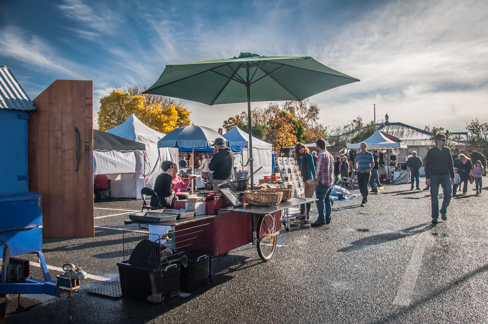
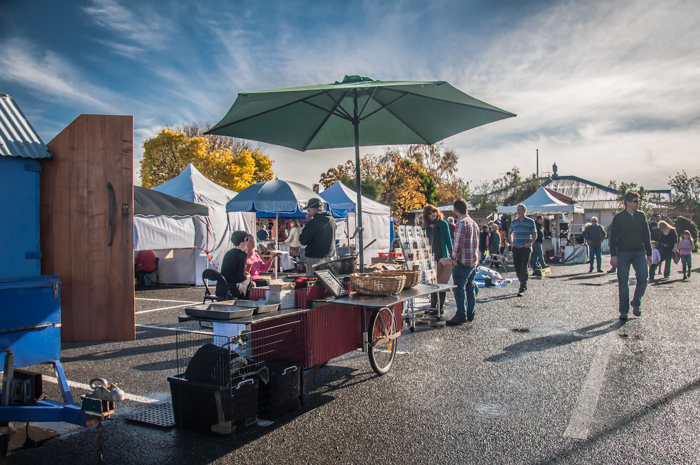

OCEANIA
Dai sapori delle isole del Pacifico alle influenze asiatiche nelle città australiane, lo street food dell’Oceania è un mix sorprendente di culture. Ingredienti freschi, piatti creativi e atmosfere rilassate, rendono ogni assaggio un’esperienza unica.
 

AUSTRALIA
Meat Pie
La meat pie australiana è un classico intramontabile, amatissima in tutto il paese.Si tratta di una torta salata con pasta friabile o morbida, ripiena di carne macinata (solitamente manzo) cotta lentamente in un sugo ricco di spezie e verdure.
Spesso viene servita con ketchup, salsa barbecue o gravy. Nato come pasto da lavoro, è diventato un simbolo della cultura gastronomica australiana, consumato in qualsiasi occasione, dagli eventi sportivi alle pause pranzo.
Barramundi Burger
Il barramundi è un pesce d’acqua dolce e salata tipico dell’Australia particolarmente apprezzato per la sua carne bianca, soda e dal sapore delicato.
Il barramundi burger è un panino farcito con filetto di questo pesce, spesso impanato e fritto o grigliato, accompagnato da salse fresche come maionese al lime, lattuga e pomodoro. È uno street food gustoso e leggero, molto popolare nelle zone costiere.
NUOVA ZELANDA
Hāngī
L’hāngī è un metodo tradizionale maori di cottura del cibo sottoterra, usato per secoli in Nuova Zelanda.
Si scavano fosse nel terreno dove vengono posti pietre riscaldate con il fuoco, poi si sistemano carne, pesce, verdure e tuberi avvolti in foglie o tessuti naturali.
Il tutto viene coperto con terra per cuocere lentamente a vapore per molte ore. Il risultato è un cibo tenero, saporito e molto aromatico, simbolo di festa, condivisione e cultura maori.
PAPUA NUOVA GUINEA
Kaukau
Il kaukau è la patata dolce locale, alimento base in Papua Nuova Guinea, solitamente cotta su braci ardenti o in forni tradizionali di terra.
Viene spesso servita come accompagnamento a piatti di carne e verdure locali, diventando una componente essenziale del pasto quotidiano.
La sua dolcezza naturale e la consistenza morbida la rendono perfetta per essere gustata anche da sola, rappresentando un cibo semplice ma nutritivo, profondamente radicato nelle tradizioni culinarie locali.